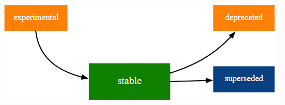

── Attaching core tidyverse packages ──────────────────────── tidyverse 2.0.0 ──
✔ dplyr 1.1.4 ✔ readr 2.1.5
✔ forcats 1.0.0 ✔ stringr 1.5.1
✔ ggplot2 3.5.0 ✔ tibble 3.2.1
✔ lubridate 1.9.3 ✔ tidyr 1.3.1
✔ purrr 1.0.2
── Conflicts ────────────────────────────────────────── tidyverse_conflicts() ──
✖ dplyr::filter() masks stats::filter()
✖ dplyr::lag() masks stats::lag()
ℹ Use the conflicted package (<http://conflicted.r-lib.org/>) to force all conflicts to become errorsActualización tidyverse
Encuentro 1
Christian Ballejo
tidyverse 2.0
La nueva versión de tidyverse incorpora lubridate al nucleo de paquetes que se activan cuando ejecutamos library(tidyverse)
Conflictos
Conflictos
En el caso de la función filter(), por ejemplo, mientras no se active tidyverse (o dplyr) el interprete utiliza la función de stats (paquete base de R). En cambio, al activar dplyr o tidyverse la propia función (dplyr::filter()) prevalece.
En las situaciones de conflicto confusas se pueden utilizar funciones del paquete conflicted.
Conflictos
Si ejecutamos código propio de la estructura tidyverse sin haber activado el paquete:
Error in eval(expr, envir, enclos): objeto 'especie' no encontradoEntonces tendremos un error a causa de utilizar la función filter() de stats.
Conflictos
Si antes activamos tidyverse:
# A tibble: 2 × 8
especie isla largo_pico_mm alto_pico_mm largo_aleta_mm masa_corporal_g sexo
<fct> <fct> <dbl> <dbl> <int> <int> <fct>
1 Adelia Torge… 39.1 18.7 181 3750 macho
2 Adelia Torge… 39.5 17.4 186 3800 hemb…
# ℹ 1 more variable: anio <int>El código se ejecuta correctamente y la elección de la función en conflicto se soluciona de forma transparente (siempre prevalece la función perteneciente al último paquete activado)
Paquete conflicted
En situaciones complejas, donde existen varias funciones con el mismo nombre de distintos paquetes, podemos utilizar el paquete conflicted.
Error:
! [conflicted] filter found in 2 packages.
Either pick the one you want with `::`:
• dplyr::filter
• stats::filter
Or declare a preference with `conflicts_prefer()`:
• `conflicts_prefer(dplyr::filter)`
• `conflicts_prefer(stats::filter)`Paquete conflicted
Luego con la función conflicts_prefers() decidir que función prevalece en el conflicto.
# A tibble: 2 × 8
especie isla largo_pico_mm alto_pico_mm largo_aleta_mm masa_corporal_g sexo
<fct> <fct> <dbl> <dbl> <int> <int> <fct>
1 Adelia Torge… 39.1 18.7 181 3750 macho
2 Adelia Torge… 39.5 17.4 186 3800 hemb…
# ℹ 1 more variable: anio <int>Ciclo de vida
El código que conforma o sigue la filosofía del tidyverse se enmarcan en estas etapas del ciclo de vida:
Las etapas del ciclo de vida pueden aplicarse a paquetes, funciones, argumentos de función e incluso valores específicos de un argumento de función.
Lo experimental puede volverse estable y lo estable puede quedar obsoleto o ser reemplazado.
Ciclo de vida
La etapa de desarrollo predeterminada es . Cuando existe una mejor alternativa disponible la etiqueta dirá (obsoleto).
Si llamamos a una función obsoleta recibiremos una advertencia:
Warning: `data_frame()` was deprecated in tibble 1.1.0.
ℹ Please use `tibble()` instead.En la mayoría de los casos, una función obsoleta acabará por eliminarse luego de un tiempo prudencial en el que los desarrolladores tendrán que dejar de usarla.
Ciclo de vida
La etiqueta (reemplazado) significa que existe una alternativa mejor pero la función en sí no va a desaparecer. Una función reemplazada no emitirá una advertencia (ya que no hay riesgo si continúa usándola), pero la documentación le indicará qué se recomienda en su lugar.
Algunas funciones se lanzan con una etiqueta para que los usuarios las puedan probar y emitir opiniones al respecto, pero no aseguran estabilidad a largo plazo.
Tuberías
La versión 4.1.0 de R introdujo una tubería nativa (|>) similar a %>%, que permite canalizaciones directas.
La forma simple de la tubería inserta el lado izquierdo como primer argumento en la llamada del lado derecho.
En la mayoría de las ocasiones se puede utilizar cualquiera de las dos tuberías indistintamente y RStudio puede configurar cual se asocia al atajo de teclado Ctrl+Shift+M (Tools > Global Options… > Code > Use native pipe operator)
Para ver las características comparativas entre las dos versiones puede leer este documento.
Encoding
Cuando trabajamos con archivos de datos de texto plano (csv, txt, etc), a veces es necesario reconocer el Enconding de los caracteres utilizados en la creación del archivo de datos para hacer una lectura adecuada.
La codificación de caracteres en los archivos especifican cómo se representan los caracteres durante el procesamiento de texto.
Existen diferentes estándares de “encoding” que se adaptan a conjuntos de caracteres específicos (generalmente según el idioma). Estas codificaciones de caracteres se conocen bajo estándares ISO u otros como Unicode.
Encoding
El estándar de trabajo del RStudio es
UTF-8y cuando el encoding de un archivo es otro puede que los caracteres especiales no se vean correctamente. (acentos o eñes que se muestran con otros caracteres equivocados).El paquete readr tiene la función
guess_enconding()que sirve para detectar el estándar de un archivo de texto plano.Las funciones de lectura del paquete permiten modificar estos estándares dentro de sus argumentos (
locale = locale())
Encoding
library(readr)
read_csv2("data/prueba.csv") |>
select(centrosalud_informe, region_sanitaria_informe)# A tibble: 3 × 2
centrosalud_informe region_sanitaria_informe
<chr> <chr>
1 "HOSPITAL A\xd1ATUYA" "REGI\xd3N METROPOLITANA NORTE"
2 "HOSPITAL CENTRAL" "REGI\xd3N METROPOLITANA NORTE"
3 "CTRO DE SALUD N\xba 17 CARLOS EVANS" "Desconocida" La función read_csv2(), así como toda su familia, espera un encoding que evidentemente el archivo no posee, por lo que vemos caracteres mal expresados (\xd1 en lugar de Ñ)
Encoding
La función guess_enconding() nos muestra con que estandares se aproximan a los caracteres encontrados dentro del archivo.
# A tibble: 2 × 2
encoding confidence
<chr> <dbl>
1 ISO-8859-1 0.47
2 ISO-8859-2 0.32A la derecha de cada estandar aparece el grado de confianza del hallazgo. Se aconseja utilizar el código con el mayor grado de confianza. En este ejemplo, es ISO-8859-1 (también conocida como Latin1 - ver)
Encoding
Con esta información podemos leer correctamente el archivo incorporando el argumento locale.
read_csv2("data/prueba.csv",
locale = locale(encoding = "ISO-8859-1")) |>
select(centrosalud_informe, region_sanitaria_informe)# A tibble: 3 × 2
centrosalud_informe region_sanitaria_informe
<chr> <chr>
1 HOSPITAL AÑATUYA REGIÓN METROPOLITANA NORTE
2 HOSPITAL CENTRAL REGIÓN METROPOLITANA NORTE
3 CTRO DE SALUD Nº 17 CARLOS EVANS Desconocida Funcionalidad mejorada de *_join()
Cambios opcionales en la familia *_join()
Agrupamientos temporales
Con el objetivo de evitar los agrupamientos permanentes de los resúmenes con group_by(), que muchas veces nos obliga al uso de ungroup(), en esta versión la función summarise() incorpora el argumento .by. (argumento experimental).
La estructura del código es:
Agrupamientos temporales
La ventaja en su uso resulta en que los resultados se calculan con los datos agrupados pero el dataframe de salida no conserva el agrupamiento activo.
datos::pinguinos |>
drop_na(sexo, masa_corporal_g) |>
summarise(
media_peso = mean(masa_corporal_g),
.by = c(especie, sexo)
)# A tibble: 6 × 3
especie sexo media_peso
<fct> <fct> <dbl>
1 Adelia macho 4043.
2 Adelia hembra 3369.
3 Papúa hembra 4680.
4 Papúa macho 5485.
5 Barbijo hembra 3527.
6 Barbijo macho 3939.Agrupamientos temporales
En cambio, el mismo ejemplo con group_by() produce esto:
datos::pinguinos |>
drop_na(sexo, masa_corporal_g) |>
group_by(especie, sexo) |>
summarise(
media_peso = mean(masa_corporal_g)
) # A tibble: 6 × 3
# Groups: especie [3]
especie sexo media_peso
<fct> <fct> <dbl>
1 Adelia hembra 3369.
2 Adelia macho 4043.
3 Barbijo hembra 3527.
4 Barbijo macho 3939.
5 Papúa hembra 4680.
6 Papúa macho 5485.Cambios en case_when()
Se adecuaron argumentos de la función case_when().
Anteriormente había que utilizar TRUE para indicar “todo lo demás” y además los NA debían estar definidos por el tipo de dato de salida (por ejemplo: NA_character_)
Cambios en case_when()
Ahora, opcionalmente, se puede reemplazar TRUE por .default y también utilizar NA para cualquier tipo de dato.
Nueva sintaxis para separar columnas
El paquete tidyr tenía una función que posibilitaba la separación de columnas llamada separate() que a partir de esta actualización fue reemplazada por las funciones separate_wider_position() y separate_wider_delim() buscando que los usos sean más obvios y el problema se maneje de mejor manera.
También se ha agregado otra función separate_wider_regex() que utiliza expresiones regulares como patrones para la separación de columnas.
Nueva sintaxis para separar columnas
Imaginemos que tenemos datos expresados de la siguiente forma:
# A tibble: 3 × 2
id descripcion
<dbl> <chr>
1 1 Especie: Adelie, Isla - Torgersen
2 2 Especie: Gentoo, Isla - Biscoe
3 3 Especie: Chinstrap, Isla - Dream La tabla de datos tiene dos variables y 3 observaciones. La variable descripcion tiene información perteneciente a dos variables y una estructura con separadores que permite su gestión.
Nueva sintaxis para separar columnas
Podemos aplicar la función separate_wider_delim() para aprovechar la coma que separa la información de cada variable.
Nueva sintaxis para separar columnas
O también podemos utilizar expresiones regulares en la función separate_wider_regex().
Nueva versión de r4ds
El año pasado, también se publicó la segunda edición del libro R para ciencia de datos donde se actualizaron las funciones de los paquetes principales de tidyverse a su ultima versión, se utiliza la nueva tubería nativa en el código de ejemplo y se reemplaza el formato de comunicación Rmarkdown por Quarto.
El enlace a la versión web del libro es R for Data Science (2e)
Nota: por ahora el libro no se ha traducido al español (solo inglés)
Práctica
La idea de esta práctica es repasar algunos procedimientos del tidyverse vistos en encuentros anteriores y sumar las actualizaciones mostradas hoy.
- Descargue la siguiente carpeta comprimida - Practica1
- Descomprima la carpeta
- Inicie el proyecto Encuentro1.Rproj
- Abra el script practica_encuentro1.R y responda las consignas

Instituto Nacional de Epidemiología